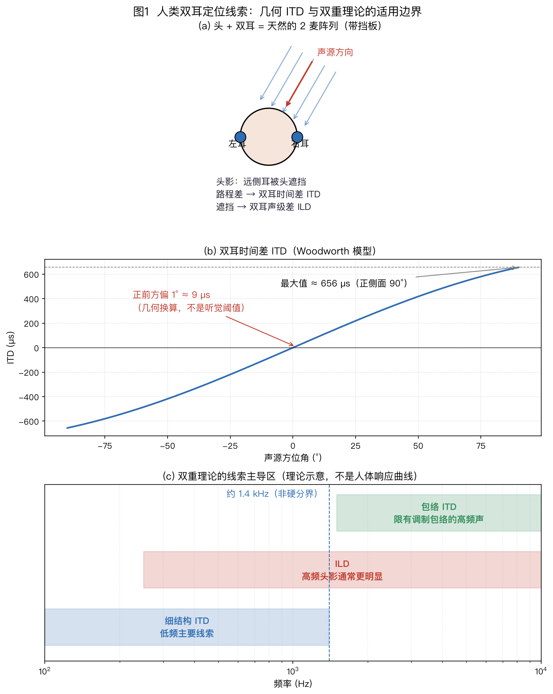

本页目录
⚠️ 本篇是教程正文第 1 章（正文共 11 章，另有附录 A/B），可独立阅读，前后篇见下方导航。
🏠 首页导读：🏠 导读与导航 ｜ 上一篇：（无） ｜ 下一篇：第 2 章 · 声音到达阵列时发生了什么
1. 从一个生活场景出发：问题定义
本章从客厅里的远场语音交互出发，依次说明空间处理的三项任务、阵列增益的不同度量，以及双耳听觉为机器阵列提供的线索。
导入：从客厅场景认识阵列任务
本节先从可观察的干扰出发，再分清阵列要解决的任务和三种不同的收益。之后的 §1.1 才把双耳听觉作为空间线索的参照。
客厅里的远场语音问题
想象你坐在客厅里，对 3 米外的智能音箱说“今天天气怎么样”。音箱要听清这句话，需要处理四类干扰：
- 环境噪声：空调声、车声；
- 房间混响：声音经墙壁、桌面、天花板反射形成“拖尾”，把音节糊在一起；
- 干扰说话人：旁边有人在看电视或说话；
- 麦克风自噪声：传感器自身的底噪，包括热噪声和电路噪声。普通环境里，它往往低于环境噪声；超指向波束形成依赖通道间的精确相消，可能显著放大自噪声，因此自噪声会限制阵列性能（见 §2.6 的白噪声增益（White Noise Gain，WNG）和 §5.3）。
人的听觉系统会合并双耳线索来定位和选择性聆听。机器可以用一组麦克风观测类似的空间差异：每个麦克风处于不同位置，同一声音到达它们的时间、强度略有不同。这些差异包含方向信息，也使系统能够优先保留某个方向的声音。
这些干扰的结构不同，不能用同一个“降噪增益”概括。先区分阵列空间处理承担的任务，再分别定义收益。
空间处理的三项任务
下面三项是阵列空间处理的核心任务：
| 任务 | 类比 | 回答的问题 |
|---|---|---|
| 声源定位 | 你闭着眼判断声音从哪来 | “声音在哪个方向？” |
| 波束形成 | 你扭头把耳朵和注意力转向说话人 | “怎么只听这个方向？” |
| 声源追踪 | 你跟着走动的说话人持续转头 | “他动了，怎么一直盯着听？” |
把表中的问题落实到一段四路麦克风录音，三项任务的输入和输出分别是：
- 定位读入同步的多路信号，输出一个或多个候选方向；某些方法还给出用于排序的方向分数，但分数不一定是校准过的置信度。
- 波束形成利用目标方向和多路信号，产生一条更偏向该方向的输出音频。
- 追踪把连续时刻的定位结果接起来，估计目标是否移动，以及何时应保持上次方向或重新捕获。
定位结果可控制波束，但三项任务的输出不相同，不能用波束输出音量替代定位误差或追踪身份正确率。
它们没有覆盖开头的全部问题。设备自己的回声由声学回声消除（Acoustic Echo Cancellation，AEC）处理，房间拖尾由去混响处理，多人同时说话还需要语音分离；这些任务分别在第 6～8 章展开。
定位、波束形成和追踪回答的问题不同，对应的评价指标也不同。下面先计算最基础的白噪声阵列增益。
三类阵列收益与白噪声增益
麦克风阵列最容易算清的一项理论收益，是对白噪声的阵列增益：$M$ 元延迟求和阵列在理想条件下可得到 $10\log_{10}M$ dB。功率 2 倍约为 3 dB，10 倍为 10 dB；4 麦约为 6 dB，8 麦约为 9 dB。
这个结果要求各通道噪声互不相关、目标可按远场平面波对齐，而且各麦克风的增益和相位一致。Kumatani–McDonough–Raj《Microphone Array Processing for Distant Speech Recognition》CMU 课程讲义，2012
定向干扰、弥散混响和模型失配不能直接并入这一个数字。它们要分别检查零陷、DI 与稳健性，具体收益随场景变化。
三类声场对应三种不同收益：
- 对独立、等功率通道噪声，用 WNG 评价。延迟求和阵列在理想无失真归一化下达到 $10\log_{10}M$。
- 对四面八方到来的弥散场，例如晚期混响，用指向性指数（Directivity Index，DI）评价。超指向设计可获得高于同麦数延迟求和阵列的 DI，但通常会牺牲 WNG（§5.3）。
- 对单个定向干扰，检查零陷深度。§5.4 的算例给出一个 −24 dB 零陷。
WNG、DI 和零陷深度的声场假设不同，不能用其中一个指标替代另外两个。
白噪声增益的推导（各麦噪声相互独立）：
- 信号侧：各麦收到的是“同一个声音错开一点时间”，对齐后同相相加——幅度变成 $M$ 倍，所以功率变成 $M^2$ 倍（功率正比于幅度的平方）；
- 噪声侧：各麦的噪声互相独立（不相关），相加时不会同相叠加而是“随机抵消一部分”——功率只变成 $M$ 倍（独立随机变量的和的方差 = 方差的和）；
- 相除：信噪比提升 $= M^2 / M = M$，换成分贝就是 $10\log_{10}M$。
以 4 只麦为例：信号幅度变为 4 倍，功率变为 16 倍；独立噪声的总功率变为 4 倍。因此信噪比提高 4 倍，约为 6 dB。满足上述条件时，麦数翻倍可增加约 3 dB。
对白噪声而言，信号同相相加，独立噪声只按功率相加。这给出延迟求和的 WNG 上限；它不是 DI、零陷深度或所有阵列算法的共同上限。
这个结果只依赖相干信号与独立噪声的叠加规律。真实系统还可利用双耳听觉中类似的时差、声级差和方向相关频谱线索。
1.1 双耳听觉的三类定位线索
从阵列模型看，双耳可以近似为带有头部散射的双传感器系统。人类主要利用三组线索判断声源方向，并在嘈杂环境中进行选择性聆听：

-
ITD（双耳时间差）：声音先到近耳、后到远耳，正侧面时两耳的时间差最大，量级约为数百微秒；按头部半径 8.75 cm、声速 343 m/s 的 Woodworth 刚性球模型计算，正侧面约为 656 μs，即约 0.66 ms（图1(b)）。
图中“正前方偏 1°约对应 9 μs”只是该几何模型的换算，不是普适的听觉阈值。实际可辨阈值随频率、声级、刺激类型和实验任务变化。Woodworth 模型是高频射线近似，低频窄带声还需考虑绕射模型。Aaronson 与 Hartmann 对 Woodworth 模型假设及适用范围的检验，JASA 2014。频率升高后，相位会绕圈，听觉神经的波形锁相也逐渐减弱，因此纯相位 ITD 会出现歧义。
-
ILD（双耳声级差，Interaural Level Difference）：头颅遮挡使远耳听到的高频通常更弱，低频绕射则会减小两耳声级差。
瑞利双重理论（duplex theory）把低频细结构 ITD 和高频 ILD 视为主要线索，但它不是互不重叠的硬分界。Brughera、Dunai 与 Hartmann 的纯音实验显示，细结构 ITD 的高频可辨上限因人而异，并在略高于 1.4 kHz 后消失；低频仍可能存在 ILD。Bernstein 与 Trahiotis 的高频调制刺激实验则说明，高频载波的包络 ITD 仍可影响侧向感知，不能与纯音相位 ITD 混为一谈。
图1(c)据此只画理论线索区和约 1.4 kHz 的非硬性边界，不画未经测量支持的人体 ILD 数值曲线。机器阵列也不能照搬这一频段划分：当均匀阵间距不满足半波长安全条件时，高频窄带相位会产生空间混叠，但非均匀几何、实测阵列流形和宽带融合仍可利用高频信息（§2.6、§3.2）。
-
HRTF（头相关传递函数，Head-Related Transfer Function）：耳廓的褶皱，加上头和肩膀的散射，对不同方向、尤其是不同俯仰角的声音产生不同的滤波（谱峰/谱谷位置变化）。
这种方向相关谱形是人类判断俯仰和减少前后混淆的重要线索之一。判断还会联合双耳时差、双耳声级差、头部运动和既有听觉经验，不能把 HRTF 写成唯一依据。经典综述可参见 Middlebrooks 与 Green 1991。
这些听觉线索在机器阵列中都有对应的观测量或处理方法。
双耳线索与阵列方法的对应关系
下表列出双耳听觉现象与阵列处理方法之间的联系：
| 人类的办法 | 机器阵列的对应技术（术语先不用记） | 章节 |
|---|---|---|
| ITD 双耳时间差 | GCC-PHAT 测 TDOA（§4.2） | §4 |
| 头颅当挡板 | 挡板散射改变与频率、方向有关的幅相响应（§3.2） | §3 |
| ILD 与 HRTF 谱线索 | 测量每个方向的“标准答案”（导向矢量；全体方向的集合叫阵列流形，标定见 §3.4、§10.2）、DNN 学习方向特征（§4.7） | §3、§4、§10 |
| 优先效应（先到声主导方位感） | 提醒算法区分直达声、早期反射与晚期混响；WPE 主要预测晚期混响，机制与听觉优先效应不同 | §2.4、§7.1 |
| 鸡尾酒会效应（多人里挑一个听） | 波束形成 + 语音分离 | §5、§8.1 |
人类用两只耳朵、头部与耳廓产生 ITD、ILD 和 HRTF，再由神经系统融合这些线索。硬件形态先提供可观测信息，后端算法再利用信息；机器阵列也是同一分工。
解析模型负责约束和可解释边界，数据驱动方法可补足难以精确建模的细节。
第 2 章将从传播时延出发，把这些空间差异写成阵列信号模型。
本章练习
下面三题可用 exercises_spatial.py 复算。程序输出按 E01-01～E01-03 标识，不需要下载数据。这里的数字是本书推导，不是设备实测。
E01-01：四只麦不一定得到 6 dB。 目标已经对齐，各路噪声功率均为 1，任意两路噪声的相关系数均为 $\rho$。对四路信号取平均，分别计算 $\rho=0、0.5、1$ 时的输出噪声功率和 SNR 改善量。为什么完全相同的噪声不会被平均消除？
参考答案：四个对角项贡献 4，十二个非对角项贡献 $12\rho$；平均权重的乘积均为 $1/16$，所以输出噪声功率为 $(4+12\rho)/16=(1+3\rho)/4$。目标响应仍为 1，SNR 改善量是该噪声功率倒数的 $10\log_{10}$。
| 噪声相关系数 $\rho$ | 输出噪声功率 | SNR 改善量 |
|---|---|---|
| 0 | 0.250 | 6.02 dB |
| 0.5 | 0.625 | 2.04 dB |
| 1 | 1.000 | 0.00 dB |
相关系数为 1 时，四路噪声也同相相加，平均后原样保留。$\rho$ 不能任意取值：这个四路等相关矩阵的特征值是 $1+3\rho$（一次）和 $1-\rho$（三次）。噪声协方差必须半正定，所以 $-1/3\le\rho\le1$；超出范围时，公式甚至可能给出负噪声功率，已不对应可能的噪声模型。
这个等相关模型用于隔离噪声相关性的影响。真实弥散场的相关性还随频率和麦间距变化，不能用一个固定 $\rho$ 描述整段语音。
E01-02：更轻的声音是否一定更干净？ 对序列 $[0,1,0,-1]$ 整体乘 0.5，计算均方功率比和电平变化。如果目标与噪声同时乘 0.5，SNR 会提高吗？
参考答案：原均方功率为 $2/4=0.5$，缩放后为 $0.5/4=0.125$，功率比为 0.25。因此电平变化为 $10\log_{10}0.25=20\log_{10}0.5\approx-6.02$ dB。目标与噪声功率同时缩小到四分之一，SNR 不变。
比较处理前后音频时，应保留共同的幅度尺度；若分别归一化到同一峰值，这项整体增益变化就会被隐藏。这里的 dB 是相对功率变化，不是声压级 dB SPL。
E01-03：噪声较大的麦应当占多少权重？ 两路目标已经对齐且幅度相同，噪声互不相关，功率分别为 1 和 4。用实权重 $w_1,w_2$ 相加，要求 $w_1+w_2=1$。先算等权平均的输出噪声，再求使输出噪声最小的权重。
参考答案：等权平均的输出噪声为 $(1+4)/4=1.25$。将 $w_2=1-w_1$ 代入，输出噪声变为 $w_1^2+4(1-w_1)^2$；对 $w_1$ 求导得 $10w_1-8=0$，所以权重为 $[0.8,0.2]^\top$，输出噪声为 $0.8^2+4\times0.2^2=0.8$。
两种权重的目标响应都是 1，因此后者相对等权平均的 SNR 改善为 $10\log_{10}(1.25/0.8)\approx1.94$ dB。它甚至优于只取噪声功率为 1 的第一路，但不是多加一只麦就必有这一收益：本题依赖独立噪声、准确功率估计和目标对齐。第 5 章的 MVDR 将这一思路推广到复权重与相关噪声。
可在章节代码练习与音频实验中试听“单麦输入”和“对齐后平均”。文件共用增益，使用本书合成的谐波音和独立噪声，不是真人语音；先从低播放音量开始。听音用于观察差别，不能替代本题的功率计算。
📄 本篇信息：配图 1 张 ｜ 回首页